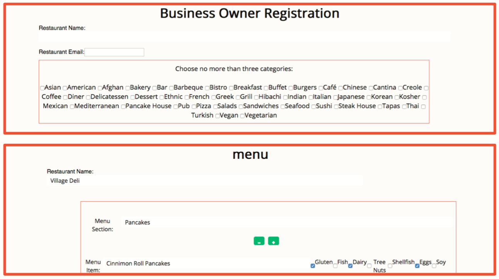
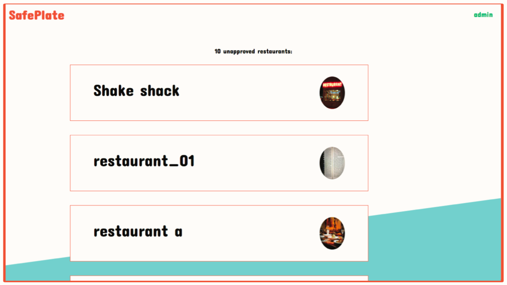
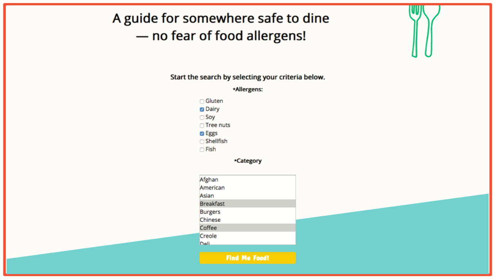
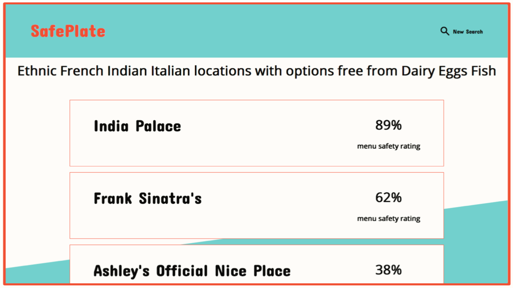
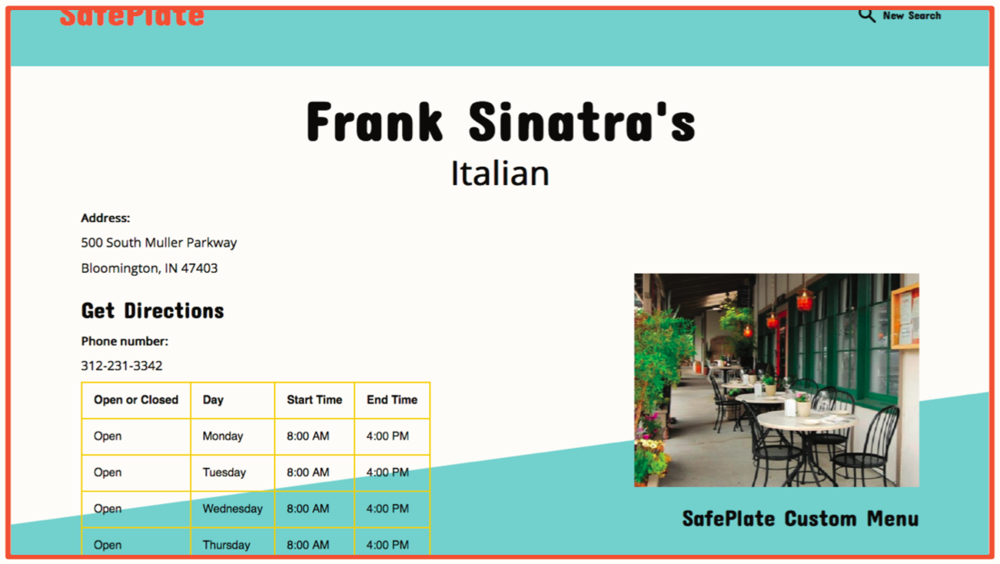
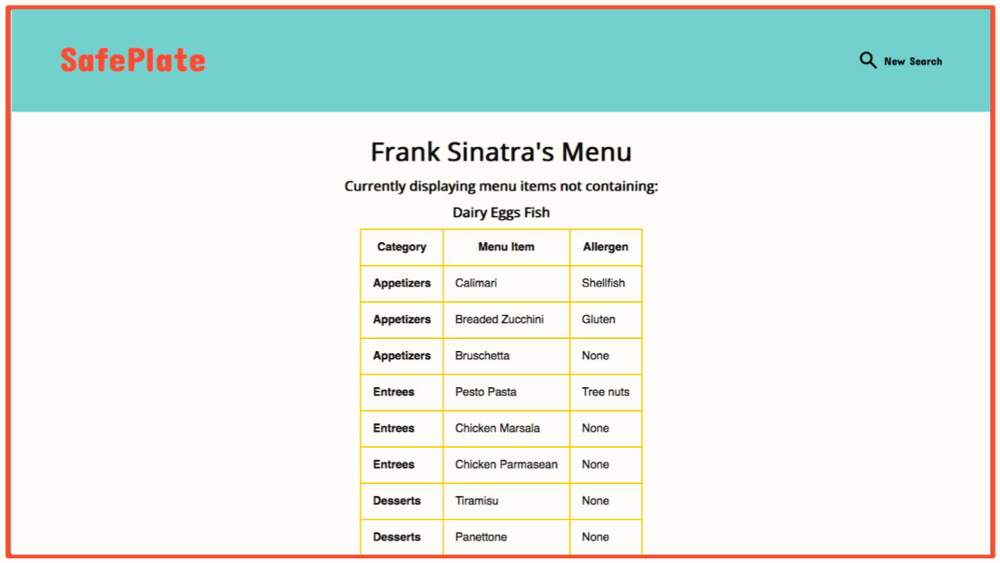
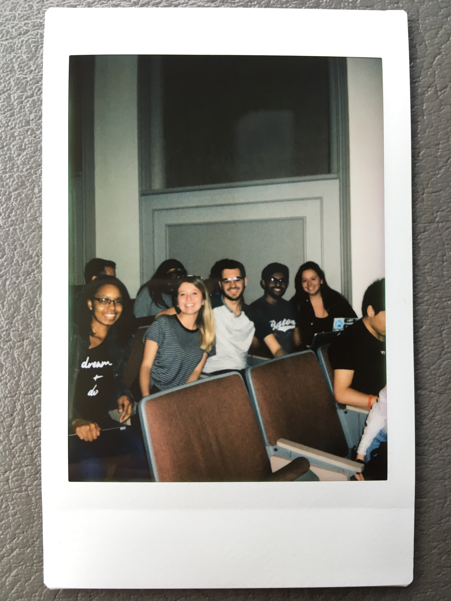
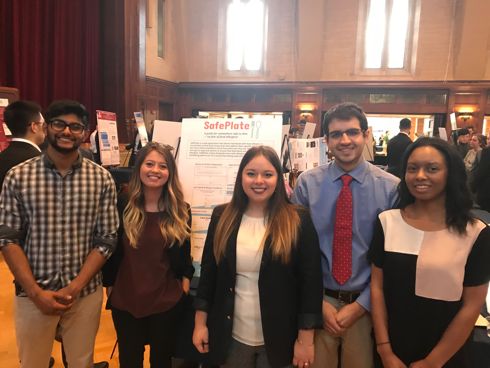

Throughout the two semesters of the informatics Capstone course, my team designed and developed a web application called SafePlate. SafePlate allows individuals with food allergies or sensitivities to find local restaurants that address their specific needs, and to see the menu items available to them from wherever they are. The goal was to come alongside users with allergies as they choose something safe to eat, ridding their restaurant dining experience of worry.
Recommendation & Rational
Implementing techniques and tools such as the following, all contributed to the responsive web application we designed and developed:
secondary research
requirements gathering
comprehensive features lists and use cases
interviews and surveys
user flows
sketching and wireframing
usability testing
interactive low and high fidelity prototyping using Adobe Illustrator and InVision
Agile methodology (Scrum)
GitHub
HTML5 & CSS
Javascript
PHP
SQL
The web application utilizes a variety of key features to accomplish its goal, such as: restaurant profile & menu creation, the ability to update that information, an administrative approval system, restaurant search engine that filters results based on allergens and food categories, as well as a customized menu that displays only menu items safe for the user.
Client & Administrative Portals
Business owners of local restaurants are able to go through our registration process to represent their menu offerings to the public. Initially, the business owner creates a profile by providing general information such as address, business hours, etc., while the second step is to provide menu information (organized by menu sections such as “Appetizers” or “Main Courses”) and the allergens contained in each individual menu item out of the seven most common food allergens. Once the business owners submit their menu, it is sent to the administrator for approval. To edit their information later, the business owner will need to verify their email to allow them to log back into their homepage. This homepage will display their menu and restaurant profile information.

Restaurant menus go through an approval system to ensure that submitted food items are tagged with the correct allergens.
In order to ensure that menu data being collected is accurate, we created an administrative approval system. We understand that the potential for error is high whenever there is user generated data, so we made sure to account for this possibility. After the business owner submits information regarding menu items and appropriate allergens, a new approval request will show up in the administrator dashboard. A designated SafePlate administrator can then go through each of the submitted menu items to check for any errors that might have occurred while entering in information. If errors are present the administrator can add comments and reject the menu. In that case, the business owner will receive an email with the attached comments regarding changes to be made. The restaurant can the login in to their account and update their menu according to the administrator's feedback. If there are no errors present in the menu submission, the administrator can then approve the it, making the restaurant profile and menu discoverable on the public SafePlate web application.

Menus submitted by restaurants must be approved by a SafePlate administrator.
Public User Side
Public users will be able to view a personalized safe menu based on their allergen preferences and desired food category. To begin the search, the user will select the allergen(s) they wish to avoid and food category. A search result list will then be generated to present the user with a list of restaurants that meet their criteria in order of most to least allergy friendly. Each result displays the restaurant name as well as the percentage of the menu that is safe for the user. This allergy friendliness rating is helpful so the user knows at a glance how easy it will to find a meal safe for them and how diverse they can expect the menu options to be.

User Search Engine - The user selects allergens they want to avoid and the food category they are interested in.

Search Results & Allergy Friendliness Rating - The results list is populated by data relevant to user's search criteria.
When a user clicks on a restaurant, they can access the restaurant profile to view business hours, address and phone number. They can also access the link to their SafePlate Customized Menu which displays only menu items safe for them, and a link to directions from the user’s location to the restaurant, as well as a map of the restaurant’s location. This information will provide the user with enough information to make an informed decision about where and what to eat, ridding their experience with the worry that so often accompanies dining with food allergies.

Restaurant Profile - Information submitted by the business itself is displayed on their profile.

Dynamic Menu - A custom menu is generated based on user's search criteria and relevant menu data.
Evaluation
Our team's biggest challenges throughout the semesters came from our technical deficiencies. When we were assembling our team around the project idea, we discussed our potential roles on the team. We all had unique skill sets that proved to be valuable, but we each admitted that we were not the most experienced developers and had no experience with Github prior to the start of the project. The technical requirements forced us to teach ourselves new systems and coding languages from scratch. There were times when we struggled with the development and had to abandon features that we originally planned for because we could not learn how to build them in a timely manner. In retrospect, although each team member spent many hours training and learning new skills, we would all agree that we should have been more realistic with what we could produce as an end product given our technical capabilities. These challenges set us back momentarily and forced us to problem solve and work harder, but ultimately we accomplished all of the necessary components.
As a team, we have learned to account for unexpected setbacks and that communication is key. It is easy to think that everyone is on the same page, but it is crucially important to verbalize individual perspectives and expectations just incase, in order to mitigate problems that may arise in the future.
Impact
Based on our evaluation and the feedback we received, we were able to iterate on the initial prototype we had created and produce a more refined version that was more effective in meeting our goal of facilitating conversation between culturally different users. I believe that with future iterations, this mobile solution could be a great way for IU students from different backgrounds to become friends and learn from their diverse experiences, but that the high fidelity prototype needs additional consideration. The interfaces were all designed by different members of our team, so that everyone got a chance to engage in the design process, but I do not believe this was the best way to approach it. The interfaces are inconsistent with one another and do not use a cohesive design language.
Thus, the user only sees menu items that are safe for them to eat, and do not have to worry about deciphering a restaurant’s menu for themselves.
This information will provide the user with enough information to make an informed decision about where and what to eat, ridding their experience with the worry that so often accompanies dining with food allergies. These features make it easier than ever for a user to find all the information they need to make an informed decision about dining out in one place and to truly enjoy the experience.

I asked my team for a group photo to document the occasion at the very beginning of the first semester.

My team members and I presented our functional web application at the 2018 Capstone Fair at Indiana University.
Credit
This team consisted of:
Tinisha Deal
Kiran Pillai
Ashley Bates
Chris Cole
Myself
The work was distributed among the team members as follows: Tinisha and Kiran worked together on the backend functionality in connecting to the database. Chris, Ashley and I developed the front end with Javascript, HTML and CSS, and Ashley and I were also responsible for the visual and interactive design.